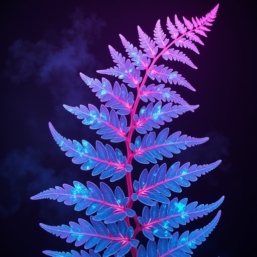

Vegetation
The planet's vegetation has adapted to its unique environment, creating landscapes unlike anything found on Earth. Towering trees with glowing leaves absorb energy from the planet's twin suns, while thick carpets of soft, strangely-colored moss covers the ground. Giant fern-like plants slowly shift their leaves throughout the day to capture the most light, and brightly colored flowering vines release spores that drift through the air. Together, these unusual plants provide food and shelter for the planet's native wildlife, forming a thriving and diverse ecosystem.

